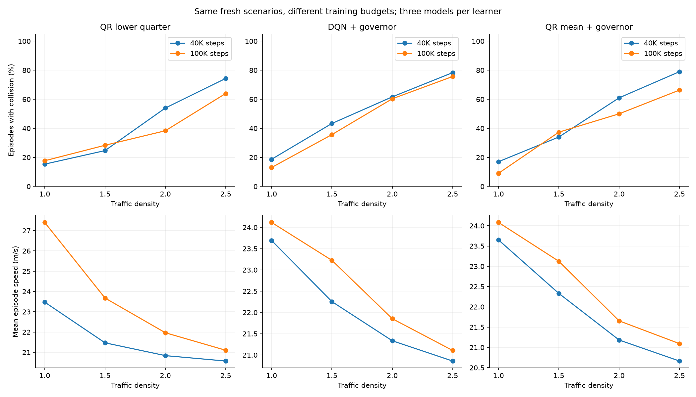

DEEP RL / LONGER TRAINING
Six completed 100K runs are evaluated alongside their 40K versions on exactly the same fresh scenarios. No new training, risk-level selection, governor tuning or checkpoint selection happens in this study.
Locked design · Full numerical results · Earlier confirmation study
The predeclared normal-traffic collision criterion is not met. Cautious QR minus governed DQN: +4.7 percentage points; conditional 95% interval [-1.7, 10.7] pp. Speed difference: +3.29 m/s.
The interval estimates scenario uncertainty for these fixed models. It does not establish equivalence, speed-independent benefit, or reliability across new training runs.
The 25 m/s governor was frozen before this study. Its resulting average speed need not match a newly trained network. Here cautious QR differs from controlled DQN by +3.29 m/s in normal traffic. This comparison is therefore not evidence that a risk rule alone caused a collision difference.
A primary criterion that is not met means the study has not established the specified advantage. It does not establish statistical equivalence.
Both budgets use seeds 20100–20199: 100 scenario IDs and three trained models per policy. Those 300 rollouts are not treated as 300 independent starting scenarios. All six 40K network prefixes exactly match the previous trained models.

| Policy | Density | Collisions | Speed m/s | Distance m | Mean return |
|---|---|---|---|---|---|
| QR lower quarter | 1.0 | 15.3% | 23.48 | 651 | 3.39 |
| QR lower quarter | 1.5 | 24.7% | 21.47 | 548 | 0.89 |
| QR lower quarter | 2.0 | 54.0% | 20.84 | 379 | -0.26 |
| QR lower quarter | 2.5 | 74.3% | 20.57 | 241 | -0.93 |
| DQN + governor | 1.0 | 18.7% | 23.69 | 660 | 3.78 |
| DQN + governor | 1.5 | 43.3% | 22.26 | 517 | 1.44 |
| DQN + governor | 2.0 | 61.7% | 21.34 | 360 | 0.14 |
| DQN + governor | 2.5 | 78.3% | 20.86 | 239 | -0.65 |
| QR mean + governor | 1.0 | 17.0% | 23.65 | 669 | 3.83 |
| QR mean + governor | 1.5 | 34.0% | 22.33 | 559 | 1.73 |
| QR mean + governor | 2.0 | 61.0% | 21.18 | 361 | 0.06 |
| QR mean + governor | 2.5 | 79.0% | 20.66 | 237 | -0.75 |
| DQN mean | 1.0 | 58.0% | 26.90 | 559 | 4.51 |
| DQN mean | 1.5 | 65.0% | 24.21 | 431 | 1.54 |
| DQN mean | 2.0 | 79.0% | 22.93 | 295 | 0.10 |
| DQN mean | 2.5 | 87.3% | 22.34 | 201 | -0.62 |
| QR mean | 1.0 | 46.7% | 26.62 | 617 | 5.11 |
| QR mean | 1.5 | 60.7% | 24.46 | 433 | 1.75 |
| QR mean | 2.0 | 74.7% | 22.75 | 307 | 0.18 |
| QR mean | 2.5 | 82.7% | 21.72 | 213 | -0.55 |
| Policy | Density | Collisions | Speed m/s | Distance m | Mean return |
|---|---|---|---|---|---|
| QR lower quarter | 1.0 | 17.7% | 27.41 | 755 | 7.85 |
| QR lower quarter | 1.5 | 28.3% | 23.68 | 594 | 3.22 |
| QR lower quarter | 2.0 | 38.3% | 21.97 | 487 | 1.46 |
| QR lower quarter | 2.5 | 64.0% | 21.10 | 323 | 0.24 |
| DQN + governor | 1.0 | 13.0% | 24.12 | 692 | 4.51 |
| DQN + governor | 1.5 | 35.7% | 23.23 | 561 | 2.69 |
| DQN + governor | 2.0 | 60.3% | 21.85 | 388 | 0.77 |
| DQN + governor | 2.5 | 75.7% | 21.11 | 266 | -0.29 |
| QR mean + governor | 1.0 | 9.0% | 24.08 | 697 | 4.57 |
| QR mean + governor | 1.5 | 37.3% | 23.12 | 563 | 2.56 |
| QR mean + governor | 2.0 | 50.0% | 21.65 | 432 | 0.99 |
| QR mean + governor | 2.5 | 66.3% | 21.09 | 306 | 0.03 |
| DQN mean | 1.0 | 42.3% | 28.71 | 681 | 7.58 |
| DQN mean | 1.5 | 59.3% | 26.35 | 489 | 3.83 |
| DQN mean | 2.0 | 79.0% | 24.13 | 326 | 1.20 |
| DQN mean | 2.5 | 83.0% | 22.46 | 240 | 0.12 |
| QR mean | 1.0 | 38.0% | 28.60 | 709 | 7.94 |
| QR mean | 1.5 | 53.7% | 25.74 | 514 | 3.89 |
| QR mean | 2.0 | 61.7% | 23.51 | 417 | 1.94 |
| QR mean | 2.5 | 74.3% | 22.44 | 297 | 0.69 |
These budget comparisons are secondary. Intervals are conditional on the fixed model set and are not adjusted for multiple comparisons.
| Policy | Density | Collision change pp | Scenario interval pp | Speed change m/s | Per-model collision changes pp |
|---|---|---|---|---|---|
| QR lower quarter | 1.0 | +2.3 | [-3.7, 8.7] | +3.93 | [-15.0, 1.0, 21.0] |
| QR lower quarter | 1.5 | +3.7 | [-2.0, 9.7] | +2.21 | [-5.0, -2.0, 18.0] |
| QR lower quarter | 2.0 | -15.7 | [-21.7, -10.0] | +1.13 | [-23.0, -20.0, -4.0] |
| QR lower quarter | 2.5 | -10.3 | [-15.7, -5.3] | +0.53 | [-5.0, -17.0, -9.0] |
| DQN + governor | 1.0 | -5.7 | [-10.7, -0.7] | +0.42 | [-4.0, -4.0, -9.0] |
| DQN + governor | 1.5 | -7.7 | [-15.3, -0.3] | +0.97 | [-13.0, -6.0, -4.0] |
| DQN + governor | 2.0 | -1.3 | [-8.3, 5.7] | +0.52 | [-6.0, -2.0, 4.0] |
| DQN + governor | 2.5 | -2.7 | [-7.3, 2.0] | +0.25 | [-6.0, 3.0, -5.0] |
| QR mean + governor | 1.0 | -8.0 | [-12.3, -3.7] | +0.43 | [-24.0, -2.0, 2.0] |
| QR mean + governor | 1.5 | +3.3 | [-4.0, 10.7] | +0.79 | [-10.0, -1.0, 21.0] |
| QR mean + governor | 2.0 | -11.0 | [-17.3, -4.7] | +0.47 | [-15.0, -14.0, -4.0] |
| QR mean + governor | 2.5 | -12.7 | [-18.0, -7.7] | +0.43 | [-13.0, -15.0, -10.0] |
| DQN mean | 1.0 | -15.7 | [-22.7, -8.7] | +1.81 | [-27.0, -7.0, -13.0] |
| DQN mean | 1.5 | -5.7 | [-14.7, 3.7] | +2.14 | [-19.0, 16.0, -14.0] |
| DQN mean | 2.0 | +0.0 | [-5.3, 5.7] | +1.20 | [-9.0, 11.0, -2.0] |
| DQN mean | 2.5 | -4.3 | [-10.3, 1.3] | +0.13 | [-7.0, 0.0, -6.0] |
| QR mean | 1.0 | -8.7 | [-15.7, -1.7] | +1.98 | [-27.0, -17.0, 18.0] |
| QR mean | 1.5 | -7.0 | [-14.0, -0.0] | +1.29 | [-25.0, -22.0, 26.0] |
| QR mean | 2.0 | -13.0 | [-19.0, -7.0] | +0.76 | [-22.0, -20.0, 3.0] |
| QR mean | 2.5 | -8.3 | [-13.0, -4.0] | +0.72 | [-13.0, -12.0, 0.0] |
| Reference | Density | Collision change pp | Scenario interval pp | Speed change m/s |
|---|---|---|---|---|
| DQN + governor | 1.0 | +4.7 | [-1.7, 10.7] | +3.29 |
| DQN + governor | 1.5 | -7.3 | [-15.0, 0.3] | +0.45 |
| DQN + governor | 2.0 | -22.0 | [-30.0, -14.0] | +0.11 |
| DQN + governor | 2.5 | -11.7 | [-17.3, -6.3] | -0.00 |
| QR mean + governor | 1.0 | +8.7 | [3.0, 14.7] | +3.32 |
| QR mean + governor | 1.5 | -9.0 | [-16.7, -1.7] | +0.55 |
| QR mean + governor | 2.0 | -11.7 | [-18.3, -5.0] | +0.31 |
| QR mean + governor | 2.5 | -2.3 | [-7.7, 3.0] | +0.01 |
| DQN mean | 1.0 | -24.7 | [-31.7, -17.7] | -1.30 |
| DQN mean | 1.5 | -31.0 | [-39.0, -23.0] | -2.67 |
| DQN mean | 2.0 | -40.7 | [-48.3, -32.7] | -2.16 |
| DQN mean | 2.5 | -19.0 | [-25.7, -12.7] | -1.36 |
| QR mean | 1.0 | -20.3 | [-26.0, -14.7] | -1.19 |
| QR mean | 1.5 | -25.3 | [-31.7, -19.0] | -2.06 |
| QR mean | 2.0 | -23.3 | [-29.7, -17.0] | -1.54 |
| QR mean | 2.5 | -10.3 | [-15.0, -6.0] | -1.34 |
python run_long_training_evaluation.py --jobs 4 validates and reuses saved evaluations. --report-only rebuilds this page.
The primary comparison is governed DQN versus cautious QR at density 1 with 100K models. All other contrasts are secondary/exploratory. Policies share the configured training-density mixture, but their experiences differ. Only three training seeds are available.
Seeds 20100–20199 are now consumed evaluation data, alongside the earlier 20000–20099 block. Any later tuning requires a new untouched confirmation block beginning at 20200. Partial observations, prediction error and simplified traffic limit conclusions; no real-road safety guarantee is established.